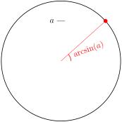
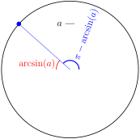
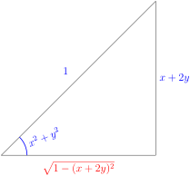

Section 3.12 Inverse Trigonometric Functions
One very useful application of implicit differentiation is to find the derivatives of inverse functions. We have already used this approach to find the derivative of the inverse of the exponential function — the logarithm.
We are now going to consider the problem of finding the derivatives of the inverses of trigonometric functions. Now is a very good time to go back and reread Section 1.6 on inverse functions — especially Definition 1.6.4. Most importantly, given a function \(f(x)\text{,}\) its inverse function \(f^{-1}(x)\) only exists, with domain \(D\text{,}\) when \(f(x)\) passes the “horizontal line test”, which says that for each \(Y\) in \(D\) the horizontal line \(y=Y\) intersects the graph \(y=f(x)\) exactly once. (That is, \(f(x)\) is a one-to-one function.)
Let us start by playing with the sine function and determine how to restrict the domain of \(\sin x\) so that its inverse function exists.
Example 3.12.1. The inverse of \(\sin x\).
Let \(y=f(x)=\sin(x)\text{.}\) We would like to find the inverse function which takes \(y\) and returns to us a unique \(x\)-value so that \(\sin(x)=y\text{.}\)

- For each real number \(Y\text{,}\) the number of \(x\)-values that obey \(\sin(x)=Y\text{,}\) is exactly the number of times the horizontal straight line \(y=Y\) intersects the graph of \(\sin(x)\text{.}\)
- When \(-1\le Y\le 1\text{,}\) the horizontal line intersects the graph infinitely many times. This is illustrated in the figure above by the line \(y=0.3\text{.}\)
- On the other hand, when \(Y \lt -1\) or \(Y \gt 1\text{,}\) the line \(y=Y\) never intersects the graph of \(\sin(x)\text{.}\) This is illustrated in the figure above by the line \(y=-1.2\text{.}\)
This is exactly the horizontal line test and it shows that the sine function is not one-to-one.
Now consider the function
This function has the same formula but the domain has been restricted so that, as we'll now show, the horizontal line test is satisfied.

As we saw above when \(|Y| \gt 1\) no \(x\) obeys \(\sin(x)=Y\) and, for each \(-1\le Y\le 1\text{,}\) the line \(y=Y\) (illustrated in the figure above with \(y=0.3\)) crosses the curve \(y=\sin(x)\) infinitely many times, so that there are infinitely many \(x\)'s that obey \(f(x)=\sin x=Y\text{.}\) However exactly one of those crossings (the dot in the figure) has \(-\frac{\pi}{2}\le x \le\frac{\pi}{2}\text{.}\)
That is, for each \(-1\le Y \le 1\text{,}\) there is exactly one \(x\text{,}\) call it \(X\text{,}\) that obeys both
That unique value, \(X\text{,}\) is typically denoted \(\arcsin(Y)\text{.}\) That is
Renaming \(Y\rightarrow x\text{,}\) the inverse function \(\arcsin(x)\) is defined for all \(-1 \le x \le 1\) and is determined by the equation
Equation 3.12.2.
Note that many texts will use \(\sin^{-1}(x)\) to denote arcsine, however we will use \(\arcsin(x)\) since we feel that it is clearer 1 ; the reader should recognise both.
Example 3.12.3. More on the inverse of \(\sin x\).
Since
and \(-\frac{\pi}{2}\le \frac{\pi}{6},\frac{\pi}{2}\le \frac{\pi}{2}\text{,}\) we have
Even though
it is not true that \(\arcsin 0 =2\pi\text{,}\) and it is not true that \(\arcsin\big(\sin(2\pi)\big) =2\pi\text{,}\) because \(2\pi\) is not between \(-\frac{\pi}{2}\) and \(\frac{\pi}{2}\text{.}\) More generally
So, for example, \(\arcsin\big(\sin\big(\frac{11\pi}{16}\big)\big)\) cannot be \(\frac{11\pi}{16}\) because \(\frac{11\pi}{16}\) is bigger than \(\frac{\pi}{2}\text{.}\) So how do we find the correct answer? Start by sketching the graph of \(\sin(x)\text{.}\)

It looks like the graph of \(\sin x\) is symmetric about \(x=\frac{\pi}{2}\text{.}\) The mathematical way to say that “the graph of \(\sin x\) is symmetric about \(x=\frac{\pi}{2}\)” is “\(\sin(\frac{\pi}{2}-\theta)= \sin(\frac{\pi}{2}+\theta)\)” for all \(\theta\text{.}\) That is indeed true 2 .
[cross-reference to target(s) "sec_trig_add" missing].Now \(\frac{11\pi}{16}=\frac{\pi}{2} +\frac{3\pi}{16}\) so
and, since \(\frac{5\pi}{16}\) is indeed between \(-\frac{\pi}{2}\) and \(\frac{\pi}{2}\text{,}\)
Subsection 3.12.1 Derivatives of Inverse Trig Functions
Now that we have explored the arcsine function we are ready to find its derivative. Lets call
so that the derivative we are seeking is \(\diff{\theta}{x}\text{.}\) The above equation is (after taking sine of both sides) equivalent to
Now differentiate this using implicit differentiation (we just have to remember that \(\theta\) varies with \(x\) and use the chain rule carefully):
This doesn't look too bad, but it's not really very satisfying because the right hand side is expressed in terms of \(\arcsin(x)\) and we do not have an explicit formula for \(\arcsin(x)\text{.}\)
However even without an explicit formula for \(\arcsin(x)\text{,}\) it is a simple matter to get an explicit formula for \(\cos\big(\arcsin(x)\big)\text{,}\) which is all we need. Just draw a right–angled triangle with one angle being \(\arcsin(x)\text{.}\) This is done in the figure below 3 .

Since \(\sin(\theta)=x\) (see 3.12.2), we have made the side opposite the angle \(\theta\) of length \(x\) and the hypotenuse of length \(1\text{.}\) Then, by Pythagoras, the side adjacent to \(\theta\) has length \(\sqrt{1-x^2}\) and so
which in turn gives us the answer we need:
The definitions for \(\arccos\text{,}\) \(\arctan\) and \(\arccot\) are developed in the same way. Here are the graphs that are used.


The definitions for the remaining two inverse trigonometric functions may also be developed in the same way 4 5 . But it's a little easier to use
Definition 3.12.4.
\(\arcsin x\) is defined for \(|x|\le 1\text{.}\) It is the unique number obeying
\(\arccos x\) is defined for \(|x|\le 1\text{.}\) It is the unique number obeying
\begin{align*} \cos\big(\arccos(x)\big)&=x &&\text{and}& 0\le &\arccos(x)\le\pi\\ \end{align*}\(\arctan x\) is defined for all \(x\in\bbbr\text{.}\) It is the unique number obeying
\begin{align*} \tan\big(\arctan(x)\big)&=x &&\text{and}& -\frac{\pi}{2} \lt &\arctan(x) \lt \frac{\pi}{2}\\ \end{align*}\(\arccsc x=\arcsin\frac{1}{x}\) is defined for \(|x|\ge 1\text{.}\) It is the unique number obeying
\begin{align*} \csc\big(\arccsc(x)\big)&=x &&\text{and}& -\frac{\pi}{2}\le &\arccsc(x)\le\frac{\pi}{2}\\ \end{align*}\(\ \ \ \ \ \ \ \ \)Because \(\csc(0)\) is undefined, \(\arccsc(x)\) never takes the value \(0\text{.}\)
\begin{align*} \end{align*}\(\arcsec x=\arccos\frac{1}{x}\) is defined for \(|x|\ge 1\text{.}\) It is the unique number obeying
\begin{align*} \sec\big(\arcsec(x)\big)&=x &&\text{and}& 0\le &\arcsec(x)\le\pi\\ \end{align*}\(\ \ \ \ \ \ \ \ \)Because \(\sec(\pi/2)\) is undefined, \(\arcsec(x)\) never takes the value \(\pi/2\text{.}\)
\begin{align*} \end{align*}\(\arccot x\) is defined for all \(x\in\bbbr\text{.}\) It is the unique number obeying
\begin{align*} \cot\big(\arccot(x)\big)&=x &&\text{and}& 0 \lt &\arccot(x) \lt \pi \end{align*}Example 3.12.5. The derivative of \(\arccos x\).
To find the derivative of \(\arccos\) we can follow the same steps:
- Write \(\arccos(x) =\theta(x)\) so that \(\cos\theta = x\) and the desired derivative is \(\diff{\theta}{x}\text{.}\)
- Differentiate implicitly, remembering that \(\theta\) is a function of \(x\text{:}\)\begin{align*} -\sin\theta \diff{\theta}{x} &= 1\\ \diff{\theta}{x} &= -\frac{1}{\sin\theta}\\ \diff{}{x}\arccos x &= -\frac{1}{\sin(\arccos x)}. \end{align*}
-
To simplify this expression, again draw the relevant triangle

from which we see
\begin{align*} \sin(\arccos x) = \sin\theta &= \sqrt{1-x^2}. \end{align*} - Thus\begin{align*} \diff{}{x}\arccos x &= -\frac{1}{\sqrt{1-x^2}}. \end{align*}
Example 3.12.6. The derivative of \(\arctan x\).
Very similar steps give the derivative of \(\arctan x\text{:}\)
- Start with \(\theta = \arctan x\text{,}\) so \(\tan \theta = x\text{.}\)
- Differentiate implicitly:\begin{align*} \sec^2 \theta \diff{\theta}{x} &= 1\\ \diff{\theta}{x} &= \frac{1}{\sec^2 \theta} = \cos^2 \theta\\ \diff{}{x}\arctan x &= \cos^2(\arctan x). \end{align*}
-
To simplify this expression, we draw the relevant triangle

from which we see
\begin{gather*} \cos^2(\arctan x) = \cos^2\theta = \frac{1}{1+x^2} \end{gather*} - Thus\begin{align*} \diff{}{x}\arctan x &= \frac{1}{1+x^2}. \end{align*}
An almost identical computation gives the derivative of \(\arccot x\text{:}\)
- Start with \(\theta = \arccot x\text{,}\) so \(\cot \theta = x\text{.}\)
- Differentiate implicitly:\begin{align*} -\csc^2 \theta \diff{\theta}{x} &= 1\\ \diff{}{x}\arccot x = \diff{\theta}{x} &= -\frac{1}{\csc^2 \theta} = -\sin^2 \theta = -\frac{1}{1+x^2} \end{align*}from the triangle

Example 3.12.7. The derivative of \(\arccsc x\).
To find the derivative of \(\arccsc\) we can use its definition and the chain rule.
Now just differentiate, carefully using the chain rule :
To simplify further we will factor \(x^{-2}\) out of the square root. We need to be a little careful doing that. Take another look at examples 2.5.6 and 2.5.7 and the discussion between them before proceeding.
\begin{align*} &= \frac{1}{\sqrt{x^{-2}(x^2-1)}} \cdot \frac{-1}{x^2}\\ &= \frac{1}{|x^{-1}|\cdot \sqrt{x^2-1}} \cdot \frac{-1}{x^2} & \text{note that $x^2 \cdot |x^{-1}| = |x|$.}\\ &= - \frac{1}{|x|\sqrt{x^2-1}} \end{align*}In the same way we can find the derivative of the remaining inverse trig function. We just use its definition, a derivative we already know and the chain rule.
By way of summary, we have
Theorem 3.12.8.
The derivatives of the inverse trigonometric functions are
Exercises 3.12.2 Exercises
1.
Give the domains of each of the following functions.
Remember that only certain numbers can come out of sine and cosine, but any numbers can go in.
(a) \((-\infty,\infty)\)
(b) all integer multiples of \(\pi\)
(c) \([-1,1]\)
(a) We can plug any number into the cosine function, and it will return a number in \([-1,1]\text{.}\) The domain of \(\arcsin x\) is \([-1,1]\text{,}\) so any number we plug into cosine will give us a valid number to plug into arcsine. So, the domain of \(f(x)\) is all real numbers.
(b) We can plug any number into the cosine function, and it will return a number in \([-1,1]\text{.}\) The domain of \(\arccsc x\) is \((-\infty,-1] \cup [1,\infty)\text{,}\) so in order to have a valid number to plug into arccosecant, we need \(\cos x = \pm 1\text{.}\) That is, the domain of \(g(x)\) is all values \(x=n\pi\) for some integer \(n\text{.}\)
(c) The domain of arccosine is \([-1,1]\text{.}\) The domain of sine is all real numbers, so no matter what number arccosine spits out, we can safely plug it into sine. So, the domain of \(h(x)\) is \([-1,1]\text{.}\)
2.
A particle starts moving at time \(t=10\text{,}\) and it bobs up and down, so that its height at time \(t \geq 10\) is given by \(\cos t\text{.}\) True or false: the particle has height 1 at time \(t=\arccos(1)\text{.}\)
What is the range of the arccosine function?
False
False: \(\cos t=1\) for infinitely many values of \(t\text{;}\) arccosine gives only the single value \(t=0\) for which \(\cos t=1\) and \(0 \leq t \leq \pi\text{.}\) The particle does not start moving until \(t=10\text{,}\) so \(t=0\) is not in the domain of the function describing its motion.
The particle will have height \(1\) at time \(2\pi n\text{,}\) for any integer \(n \geq 2\text{.}\)
3.
The curve \(y=f(x)\) is shown below, for some function \(f\text{.}\) Restrict \(f\) to the largest possible interval containing \(0\) over which it is one--to--one, and sketch the curve \(y=f^{-1}(x)\text{.}\)
A one-to-one function passes the horizontal line test. To graph the inverse of a function, reflect it across the line \(y=x\text{.}\)
First, we restrict the domain of \(f\) to force it to be one--to--one. There are many intervals we could choose over which \(f\) is one--to--one, but the question asks us to contain \(x=0\) and be as large as possible; this leaves us with the following restricted function:
The inverse of a function swaps the role of the input and output; so if the graph of \(y=f(x)\) contains the point \((a,b)\text{,}\) then the graph of \(Y=f^{-1}(X)\) contains the point \((b,a)\text{.}\) That is, the graph of \(Y=f^{-1}(X)\) is the graph of \(y=f(x)\) with the \(x\)-coordinates and \(y\)-coordinates swapped. (So, since \(y=f(x)\) crosses the \(y\)-axis at \(y=1\text{,}\) then \(Y=f^{-1}(X)\) crosses the \(X\)-axis at \(X=1\text{.}\)) This swapping is equivalent to reflecting the curve \(y=f(x)\) over the line \(y=x\text{.}\)
Remark: while you're getting accustomed to inverse functions, it is sometimes clearer to consider \(y=f(x)\) and \(Y=f^{-1}(X)\text{:}\) using slightly different notations for \(x\) (the input of \(f\text{,}\) hence the output of \(f^{-1}\)) and \(X\) (the input of \(f^{-1}\text{,}\) which comes from the output of \(f\)). However, the convention is to use \(x\) for the inputs of both functions, and \(y\) as the outputs of both functions, as is written on the graph above.
4.
Let \(a\) be some constant. Where does the curve \(y=ax+\cos x\) have a horizontal tangent line?
Your answer will depend on \(a\text{.}\) The arcsine function alone won't give you every value.
- If \(|a| \gt 1\text{,}\) there is no point where the curve has horizontal tangent line.
- If \(|a|=1\text{,}\) the curve has a horizontal tangent line where \(x=2\pi n + \dfrac{a\pi}{2}\) for any integer \(n\text{.}\)
- If \(|a| \lt 1\text{,}\) the curve has a horizontal tangent line where \(x=2\pi n+\arcsin(a)\) or \(x=(2 n +1) \pi - \arcsin (a)\) for any integer \(n\text{.}\)
The tangent line is horizontal when \(0=y'=a-\sin x\text{.}\) That is, when \(a=\sin x\text{.}\)
- If \(|a| \gt 1\text{,}\) then there is no value of \(x\) for which \(a=\sin x\text{,}\) so the curve has no horizontal tangent lines.
- If \(|a| = 1\text{,}\) then there are infinitely many solutions to \(a=\sin x\text{,}\) but only one solution in the interval \([-\pi,\pi]\text{:}\) \(x=\arcsin(a)=\arcsin(\pm1)=\pm\frac{\pi}{2}\text{.}\) Then the values of \(x\) for which \(a=\sin x\) are \(x=2\pi n +a \frac{\pi}{2}\) for any integer \(n\text{.}\)
-
If \(|a| \lt 1\text{,}\) then there are infinitely many solutions to \(a=\sin x\text{.}\) The solution in the interval \(\left(-\frac{\pi}{2},\frac{\pi}{2}\right)\) is given by \(x=\arcsin(a)\text{.}\) The other solution in the interval \(\left(-\pi,\pi\right)\) is given by \(x=\pi-\arcsin(a)\text{,}\) as shown in the unit circles below.
So, the values of \(x\) for which \(x=\sin a\) are \(x=2\pi n+\arcsin(a)\) and \(x=2\pi n + \pi - \arcsin (a)\) for any integer \(n\text{.}\)
Remark: when \(a=1\text{,}\) then
Similarly, when \(a=-1\text{,}\)
So, if we try to use the descriptions in the third bullet point to describe points where the tangent line is horizontal when \(|a|=1\text{,}\) we get the correct points but each point is listed twice. This is why we separated the case \(|a|=1\) from the case \(|a| \lt 1\text{.}\)
5.
Define a function \(f(x)=\arcsin x + \arccsc x\text{.}\) What is the domain of \(f(x)\text{?}\) Where is \(f(x)\) differentiable?
In order for \(x\) to be in the domain of \(f\text{,}\) you must be able to plug \(x\) into both arcsine and arccosecant.
Domain: \(x=\pm 1\text{.}\) Not differentiable anywhere.
The function \(\arcsin x\) is only defined for \(|x| \leq 1\text{,}\) and the function \(\arccsc x\) is only defined for \(|x| \geq 1\text{,}\) so \(f(x)\) has domain \(|x|=1\text{.}\) That is, \(x=\pm1\text{.}\)
In order for \(f(x)\) to be differentiable at a point, it must exist in an open interval around that point. (See Definition 3.2.1.) Since our function does not exist over any open interval, \(f(x)\) is not differentiable anywhere.
So, actually, \(f(x)\) is a pretty boring function, which we can entirely describe as: \(f(-1)=-\pi\) and \(f(1)=\pi\text{.}\)
6.
Differentiate \(f(x)=\arcsin\left(\dfrac{x}{3}\right)\text{.}\) What is the domain of \(f(x)\text{?}\)
For the domain of \(f\text{,}\) remember the domain of arcsine is \([-1,1]\text{.}\)
\(f'(x)=\dfrac{1}{\sqrt{9-x^2}}\text{;}\) domain of \(f\) is \([-3,3]\text{.}\)
Using the chain rule,
Since the domain of arcsine is \([-1,1]\text{,}\) and we are plugging in \(\dfrac{x}{3}\) to arcsine, the values of \(x\) that we can plug in are those that satisfy \(-1 \le \dfrac{x}{3} \leq 1\text{,}\) or \(-3\leq x \leq 3\text{.}\) So the domain of \(f\) is \([-3,3]\text{.}\)
7.
Differentiate \(f(t)=\dfrac{\arccos t}{t^2-1}\text{.}\) What is the domain of \(f(t)\text{?}\)
The domain of \(\arccos(t)\) is \([-1,1]\text{,}\) but you also have to make sure you aren't dividing by zero.
\(f'(t)=\dfrac{-\frac{t^2-1}{\sqrt{1-t^2}}-2t\arccos t}{(t^2-1)^2}\text{,}\) and the domain of \(f(t)\) is \((-1,1)\text{.}\)
Using the quotient rule,
The domain of arccosine is \([-1,1]\text{,}\) and since \(t^2-1\) is in the denominator, the domain of \(f\) requires \(t^2-1 \neq 0\text{,}\) that is, \(t \neq \pm 1\text{.}\) So the domain of \(f(t)\) is \((-1,1)\text{.}\)
8.
Differentiate \(f(x)=\arcsec(-x^2-2)\text{.}\) What is the domain of \(f(x)\text{?}\)
\(\ds\diff{}{x}\left\{\arcsec x\right\} = \dfrac{1}{|x|\sqrt{x^2-1}}\text{,}\) and the domain of \(\arcsec x\) is \(|x|\ge1\text{.}\)
The domain of \(f(x)\) is all real numbers, and \(f'(x)=\dfrac{-2x}{(x^2+2)\sqrt{x^4+4x^2+3}}\text{.}\)
The domain of \(\arcsec x\) is \(|x| \geq 1\text{:}\) that is, we can plug into arcsecant only values with absolute value greater than or equal to one. Since \(-x^2-2 \leq -2\text{,}\) every real value of \(x\) gives us an acceptable value to plug into arcsecant. So, the domain of \(f(x)\) is all real numbers.
To differentiate, we use the chain rule. Remember \(\ds\diff{}{x}\left\{\arcsec x\right\} = \dfrac{1}{|x|\sqrt{x^2-1}}\text{.}\)
9.
Differentiate \(f(x)=\dfrac{1}{a}\arctan\left(\dfrac{x}{a}\right)\text{,}\) where \(a\) is a nonzero constant. What is the domain of \(f(x)\text{?}\)
The domain of \(\arctan(x)\) is all real numbers.
\(f'(x)=\dfrac{1}{a^2+x^2}\) and the domain of \(f(x)\) is all real numbers.
We use the chain rule, remembering that \(a\) is a constant.
The domain of arctangent is all real numbers, so the domain of \(f(x)\) is also all real numbers.
10.
Differentiate \(f(x)=x\arcsin x + \sqrt{1-x^2}\text{.}\) What is the domain of \(f(x)\text{?}\)
The domain of \(\arcsin x\) is \([-1,1]\text{,}\) and the domain of \(\sqrt{x}\) is \(x \geq 0\text{.}\)
\(f'(x)=\arcsin x\text{,}\) and the domain of \(f(x)\) is \([-1,1]\text{.}\)
We differentiate using the product and chain rules.
The domain of \(\arcsin x\) is \([-1,1]\text{,}\) and the domain of \(\sqrt{1-x^2}\) is all values of \(x\) so that \(1-x^2 \geq 0\text{,}\) so \(x\) in \([-1,1]\text{.}\) Therefore, the domain of \(f(x)\) is \([-1,1]\text{.}\)
11.
For which values of \(x\) is the tangent line to \(y=\arctan (x^2)\) horizontal?
12.
Evaluate \(\ds\diff{}{x}\{\arcsin x + \arccos x\}\text{.}\)
The answer is a very simple expression.
\(\ds\diff{}{x}\{\arcsin x + \arccos x\}=0\)
Using formulas you should memorize from this section,
Remark: the only functions with derivative equal to zero everywhere are constant functions, so \(\arcsin x + \arccos x\) should be a constant. Since \(\sin \theta = \cos \left(\frac{\pi}{2}-\theta\right)\text{,}\) we can set
where \(x\) and \(\theta\) are the same in both expressions, and \(-\frac{\pi}{2} \leq \theta \leq \frac{\pi}{2}\text{.}\) Then
\begin{align*} \arcsin x &=\theta & \arccos x &= \frac{\pi}{2}-\theta \end{align*}We note here that arcsine is the inverse of the sine function restricted to \(\left[-\frac{\pi}{2}, \frac{\pi}{2}\right]\text{.}\) So, since we restricted \(\theta\) to this domain, \(\sin \theta=x\) really does imply \(\arcsin x = \theta\text{.}\) (For an example of why this matters, note \(\sin(2\pi)=0\text{,}\) but \(\arcsin (0)=0 \neq 2\pi\text{.}\)) Similarly, arccosine is the inverse of the cosine function restricted to \([0,\pi]\text{.}\) Since \(-\frac{\pi}{2} \leq \theta \leq \frac{\pi}{2}\text{,}\) then \(0 \leq (\frac{\pi}{2}-\theta) \leq \pi\text{,}\) so \(\cos\left(\frac{\pi}{2}- \theta\right) =x\) really does imply \(\arccos x=\frac{\pi}{2}-\theta\text{.}\)
So,
which means the derivative we were calculating was actually just \(\ds\diff{}{x}\left\{\dfrac{\pi}{2}\right\}=0\text{.}\)
13. 1997A.
Find the derivative of \(y=\arcsin \!\big(\frac{1}{x}\big)\text{.}\)
14. 1996D.
Find the derivative of \(y=\arctan \big(\frac{1}{x}\big)\text{.}\)
15. 1999H.
Calculate and simplify the derivative of \((1+x^2)\arctan x\text{.}\)
16.
Show that \(\ds\diff{}{x}\left\{\sin\left(\arctan(x) \right)\right\} = (x^2+1)^{-3/2}\text{.}\)
You can simplify the expression before you differentiate to remove the trigonometric functions. If \(\arctan x =\theta\text{,}\) then fill in the sides of the triangle below using the definition of arctangent and the Pythagorean theorem:
With the sides labeled, you can figure out \(\sin\left(\arctan x\right)=\sin\left(\theta\right)\text{.}\)
Let \(\theta = \arctan x\text{.}\) Then \(\theta\) is the angle of a right triangle that gives \(\tan \theta = x\text{.}\) In particular, the ratio of the opposite side to the adjacent side is \(x\text{.}\) So, we have a triangle that looks like this:
where the length of the hypotenuse came from the Pythagorean Theorem. Now,
From here, we differentiate using the quotient rule:
Let \(\theta = \arctan x\text{.}\) Then \(\theta\) is the angle of a right triangle that gives \(\tan \theta = x\text{.}\) In particular, the ratio of the opposite side to the adjacent side is \(x\text{.}\) So, we have a triangle that looks like this:
where the length of the hypotenuse came from the Pythagorean Theorem. Now,
From here, we differentiate using the quotient rule:
Remark: another strategy is to differentiate first, using the chain rule, then draw a triangle to simplify the resulting expression \(\ds\diff{}{x}\left\{\sin\left(\arctan x\right)\right\}=\dfrac{\cos(\arctan x)}{1+x^2}\text{.}\)
17.
Show that \(\ds\diff{}{x}\left\{\cot\left(\arcsin(x) \right)\right\} = \dfrac{-1}{x^2\sqrt{1-x^2}}\text{.}\)
You can simplify the expression before you differentiate to remove the trigonometric functions. If \(\arcsin x =\theta\text{,}\) then fill in the sides of the triangle below using the definition of arctangent and the Pythagorean theorem:
With the sides labeled, you can figure out \(\cot\left(\arcsin x\right)=\cot\left(\theta\right)\text{.}\)
Let \(\theta = \arcsin x\text{.}\) Then \(\theta\) is the angle of a right triangle that gives \(\sin \theta = x\text{.}\) In particular, the ratio of the opposite side to the hypotenuse is \(x\text{.}\) So, we have a triangle that looks like this:
where the length of the adjacent side came from the Pythagorean Theorem. Now,
From here, we differentiate using the quotient rule:
Let \(\theta = \arcsin x\text{.}\) Then \(\theta\) is the angle of a right triangle that gives \(\sin \theta = x\text{.}\) In particular, the ratio of the opposite side to the hypotenuse is \(x\text{.}\) So, we have a triangle that looks like this:
where the length of the adjacent side came from the Pythagorean Theorem. Now,
From here, we differentiate using the quotient rule:
Remark: another strategy is to differentiate first, using the chain rule, then draw a triangle to simplify the resulting expression \(\ds\diff{}{x}\left\{\cot\left(\arcsin x\right)\right\}=\frac{-\csc^2(\arcsin x)}{\sqrt{1-x^2}}\text{.}\)
18. 1997D.
Determine all points on the curve \(y=\arcsin x\) where the tangent line is parallel to the line \(y=2x+9\text{.}\)
What is the slope of the line \(y=2x+9\text{?}\)
\((x,y)=\pm\big(\frac{\sqrt{3}}{2},\frac{\pi}{3}\big)\)
The line \(y=2x+9\) has slope \(2\text{,}\) so we must find all values of \(x\) between \(-1\) and \(1\) (\(\arcsin x\) is only defined for these values of \(x\)) for which \(\diff{}{x}\{\arcsin x\}=2\text{.}\) Evaluating the derivative:
19.
For which values of \(x\) does the function \(f(x)=\arctan(\csc x)\) have a horizontal tangent line?
Differentiate using the chain rule.
\(x=\dfrac{(2n+1)\pi}{2}\) for any integer \(n\)
We differentiate using the chain rule:
So if \(f'(x)=0\text{,}\) then \(\cos x=0\text{,}\) and this happens when \(x=\dfrac{(2n+1)\pi}{2}\) for any integer \(n\text{.}\) We should check that these points are in the domain of \(f\text{.}\) Arctangent is defined for all real numbers, so we only need to check the domain of cosecant; when \(x=\dfrac{(2n+1)\pi}{2}\text{,}\) then \(\sin x=\pm1 \neq 0\text{,}\) so \(\csc x = \dfrac{1}{\sin x}\) exists.
20. 2009H.
Let \(f(x) = x + \cos x\text{,}\) and let \(g(y) = f^{-1}(y)\) be the inverse function. Determine \(g'(y)\text{.}\)
If \(g(y)=f^{-1}(y)\text{,}\) then \(f(g(y))=f\left(f^{-1}(y)\right)=y\text{.}\) Differentiate this last equality using the chain rule.
\(g'(y)=\dfrac{1}{1-\sin g(y)}\)
Since \(g(y)=f^{-1}(y)\text{,}\)
Now, we can differentiate with respect to \(y\) using the chain rule.
\begin{align*} \diff{}{y}\left\{f(g(y))\right\}&=\diff{}{y}\{y\}\\ f'(g(y))\cdot g'(y)&=1\\ g'(y)&=\frac{1}{f'(g(y))}=\frac{1}{1-\sin g(y)} \end{align*}21. 2007H.
\(f(x) = 2x-\sin(x)\) is one--to--one. Find \(\big(f^{-1}\big)'(\pi-1)\text{.}\)
To simplify notation, let \(g(y)=f^{-1}(y)\text{.}\) Simplify and differentiate \(g(f(x))\text{.}\)
\(\dfrac{1}{2}\)
Write \(g(y)=f^{-1}(y)\text{.}\) Then \(g(f(x))=x\text{,}\) so differentiating both sides (using the chain rule), we see
What we want is \(g'(\pi-1)\text{,}\) so we need to figure out which value of \(x\) gives \(f(x)=\pi-1\text{.}\) A little trial and error leads us to \(x=\frac{\pi}{2}\text{.}\)
\begin{align*} g'(\pi-1)\cdot f'\left(\frac{\pi}{2}\right)&=1\\ \end{align*}Since \(f'(x)=2-\cos(x)\text{,}\) \(f'\left(\frac{\pi}{2}\right)=2-0=2\text{:}\)
\begin{align*} g'(\pi-1)\cdot 2&=1\\ g'(\pi-1)=\frac{1}{2} \end{align*}22. 2006H.
\(f(x) = e^x+x\) is one--to--one. Find \(\big(f^{-1}\big)'(e+1)\text{.}\)
To simplify notation, let \(g(y)=f^{-1}(y)\text{.}\) Simplify and differentiate \(g(f(x))\text{.}\)
\(\dfrac{1}{e+1}\)
Write \(g(y)=f^{-1}(y)\text{.}\) Then \(g(f(x))=x\text{,}\) so differentiating both sides (using the chain rule), we see
What we want is \(g'(e+1)\text{,}\) so we need to figure out which value of \(x\) gives \(f(x)=e+1\text{.}\) A little trial and error leads us to \(x=1\text{.}\)
\begin{align*} g'(f(1))f'(1)&=1\\ g'(e+1)\cdot f'(1)&=1\\ g'(e+1) &= \frac{1}{f'(1)}\\ \end{align*}It remains only to note that \(f'(x)=e^x+1\text{,}\) so \(f'(1)=e+1\)
\begin{align*} g'(e+1)&=\frac{1}{e+1} \end{align*}23.
Differentiate \(f(x)=[\sin x +2]^{\arcsec x}\text{.}\) What is the domain of this function?
Use logarithmic differentiation.
\(f'(x)=[\sin x +2]^{\arcsec x}\left(\dfrac{\log[\sin x +2]}{|x|\sqrt{x^2-1}}+ \dfrac{\arcsec x \cdot\cos x}{\sin x +2}\right)\text{.}\) The domain of \(f(x)\) is \(|x|\ge 1\text{.}\)
We use logarithmic differentiation, our standard method of differentiating an expression of the form \((\mbox{function})^{\mbox{function}}\text{.}\)
The domain of \(\arcsec x\) is \(|x| \geq 1\text{.}\) For any \(x\text{,}\) \(\sin x +2\) is positive, and a positive number can be raised to any power. (Recall negative numbers cannot be raised to any power--for example, \((-1)^{1/2}=\sqrt{-1}\) is not a real number.) So, the domain of \(f(x)\) is \(|x| \geq 1\text{.}\)
24.
Suppose you can't remember whether the derivative of arcsine is \(\dfrac{1}{\sqrt{1-x^2}}\) or \(\dfrac{1}{\sqrt{x^2-1}}\text{.}\) Describe how the domain of arcsine suggests that one of these is wrong.
Where are those functions defined?
The function \(\dfrac{1}{\sqrt{x^2-1}}\) exists only for those values of \(x\) with \(x^2-1 \gt 0\text{:}\) that is, the domain of \(\dfrac{1}{\sqrt{x^2-1}}\) is \(|x| \gt 1\text{.}\) However, the domain of arcsine is \(|x| \leq 1\text{.}\) So, there is not one single value of \(x\) where \(\arcsin x\) and \(\dfrac{1}{\sqrt{x^2-1}}\) are both defined.
If the derivative of \(\arcsin(x)\) were given by \(\dfrac{1}{\sqrt{x^2-1}}\text{,}\) then the derivative of \(\arcsin(x)\) would not exist anywhere, so we would probably just write “derivative does not exist,” instead of making up a function with a mismatched domain. Also, the function \(f(x)=\arcsin(x)\) is a smooth curve--its derivative exists at every point strictly inside its domain. (Remember not all curves are like this: for instance, \(g(x)=|x|\) does not have a derivative at \(x=0\text{,}\) but \(x=0\) is strictly inside its domain.) So, it's a pretty good bet that the derivative of arcsine is not \(\dfrac{1}{\sqrt{x^2-1}}\text{.}\)
The function \(\dfrac{1}{\sqrt{x^2-1}}\) exists only for those values of \(x\) with \(x^2-1 \gt 0\text{:}\) that is, the domain of \(\dfrac{1}{\sqrt{x^2-1}}\) is \(|x| \gt 1\text{.}\) However, the domain of arcsine is \(|x| \leq 1\text{.}\) So, there is not one single value of \(x\) where \(\arcsin x\) and \(\dfrac{1}{\sqrt{x^2-1}}\) are both defined.
If the derivative of \(\arcsin(x)\) were given by \(\dfrac{1}{\sqrt{x^2-1}}\text{,}\) then the derivative of \(\arcsin(x)\) would not exist anywhere, so we would probably just write “derivative does not exist,” instead of making up a function with a mismatched domain. Also, the function \(f(x)=\arcsin(x)\) is a smooth curve--its derivative exists at every point strictly inside its domain. (Remember not all curves are like this: for instance, \(g(x)=|x|\) does not have a derivative at \(x=0\text{,}\) but \(x=0\) is strictly inside its domain.) So, it's a pretty good bet that the derivative of arcsine is not \(\dfrac{1}{\sqrt{x^2-1}}\text{.}\)
25.
Evaluate \(\displaystyle \lim_{x\to 1}\left( (x-1)^{-1}\left(\arctan x - \frac{\pi}{4}\right)\right).\)
Compare this to one of the forms given in the text for the definition of the derivative.
\(\dfrac{1}{2}\)
This limit represents the derivative computed at \(x=1\) of the function \(f(x)=\arctan x\text{.}\) To see this, simply use the definition of the derivative at \(a=1\text{:}\)
Since the derivative of \(f(x)\) is \(\dfrac{1}{1+x^2}\text{,}\) its value at \(x=1\) is exactly \(\dfrac{1}{2}\text{.}\)
26.
Suppose \(f(2x+1)=\dfrac{5x-9}{3x+7}\text{.}\) Evaluate \(f^{-1}(7)\text{.}\)
\(f^{-1}(7)\) is the number \(y\) that satisfies \(f(y)=7\text{.}\)
\(f^{-1}(7)=-\dfrac{25}{4}\)
First, let's interpret the given information: when the input of our function is \(2x+1\) for some \(x\text{,}\) then its output is \(\dfrac{5x-9}{3x+7}\text{,}\) for that same \(x\text{.}\) We're asked to evaluate \(f^{-1}(7)\text{,}\) which is the number \(y\) with the property that \(f(y)=7\text{.}\) If the output of our function is 7, that means
and so
\begin{align*} 7(3x+7)&=5x-9\\ x&=-\frac{29}{8}\\ \end{align*}So, when \(x=-\dfrac{29}{8}\text{,}\) our equation \(f(2x+1)=\dfrac{5x-9}{3x+7}\) becomes:
\begin{align*} f\left(2\cdot\frac{-29}{8}+1\right)&=\dfrac{5\cdot\frac{-29}{8}-9}{3\cdot\frac{-29}{8}+7}\\ \end{align*}Or, equivalently:
\begin{align*} f\left(-\frac{25}{4}\right)&=7 \end{align*}Therefore, \(f^{-1}(7)=-\dfrac{25}{4}\text{.}\)
27.
Suppose \(f^{-1}(4x-1)=\dfrac{2x+3}{x+1}\text{.}\) Evaluate \(f(0)\text{.}\)
If \(f^{-1}(y)=0\text{,}\) that means \(f(0)=y\text{.}\) So, we're looking for the number that we plug into \(f^{-1}\) to get 0.
\(f(0)=-7\)
If \(f^{-1}(y)=0\text{,}\) that means \(f(0)=y\text{.}\) So, we want to find out what we plug into \(f^{-1}\) to get 0. Since we only know \(f^{-1}\) in terms of a variable \(x\text{,}\) let's figure out what \(x\) gives us an output of 0:
Now, the equation \(f^{-1}(4x-1)=\dfrac{2x+3}{x+1}\) with \(x=\dfrac{-3}{2}\) tells us:
\begin{align*} f^{-1}\left(4\cdot\frac{-3}{2}-1\right)&=\frac{2\cdot\frac{-3}{2}+3}{\frac{-3}{2}+1}\\ \end{align*}Or, equivalently:
\begin{align*} f^{-1}(-7)&=0 \end{align*}Therefore, \(f(0)=-7\text{.}\)
28.
Suppose a curve is defined implicitly by
Solve for \(y'\) in terms of \(x\) and \(y\text{.}\)
As usual, after you differentiate implicitly, get all the terms containing \(y'\) onto one side of the equation, so you can factor out \(y'\text{.}\)
\(y'=\dfrac{2x\sqrt{1-(x+2y)^2}-1}{2-2y\sqrt{1-(x+2y)^2}}\text{,}\) or equivalently, \(y'=\dfrac{2x\cos(x^2+y^2)-1}{2-2y\cos(x^2+y^2)}\)
- Solution 1: We begin by differentiating implicitly. Following the usual convention, we use \(y'\) to mean \(y'(x)\text{.}\) We start with\begin{align*} \arcsin(x+2y)&=x^2+y^2 \end{align*}Using the chain rule,\begin{align*} \frac{1+2y'}{\sqrt{1-(x+2y)^2}}&=2x+2yy'\\ \frac{1}{\sqrt{1-(x+2y)^2}}+\frac{2y'}{\sqrt{1-(x+2y)^2}}&=2x+2yy'\\ \frac{2y'}{\sqrt{1-(x+2y)^2}}-2yy'&=2x-\frac{1}{\sqrt{1-(x+2y)^2}}\\ y'\left(\frac{2}{\sqrt{1-(x+2y)^2}}-2y\right)&=2x-\frac{1}{\sqrt{1-(x+2y)^2}} \end{align*}Finally, solving for \(y'\) gives\begin{align*} y'&=\frac{2x-\frac{1}{\sqrt{1-(x+2y)^2}}}{\frac{2}{\sqrt{1-(x+2y)^2}}-2y} \left(\frac{\sqrt{1-(x+2y)^2}}{\sqrt{1-(x+2y)^2}}\right)\\ y'&=\frac{2x\sqrt{1-(x+2y)^2}-1}{2-2y\sqrt{1-(x+2y)^2}} \end{align*}
- Solution 2: We begin by taking the sine of both sides of the equation.\begin{align*} \arcsin(x+2y)&=x^2+y^2\\ x+2y&=\sin(x^2+y^2)\\ \end{align*}
Now, we differentiate implicitly.
\begin{align*} 1+2y'&=\cos(x^2+y^2)\cdot(2x+2yy')\\ 1+2y'&=2x\cos(x^2+y^2)+2yy'\cos(x^2+y^2)\\ 2y'-2yy'\cos(x^2+y^2)&=2x\cos(x^2+y^2)-1\\ y'\left(2-2y\cos(x^2+y^2)\right)&=2x\cos(x^2+y^2)-1\\ y'&=\frac{2x\cos(x^2+y^2)-1}{2-2y\cos(x^2+y^2)} \end{align*} -
We used two different methods, and got two answers that look pretty different. However, the answers ought to be equivalent. To see this, we remember that for all values of \(x\) and \(y\) that we care about (those pairs \((x,y)\) in the domain of our curve), the equality
\begin{equation*} \arcsin(x+2y)=x^2+y^2 \end{equation*}holds. Drawing a triangle:
where the adjacent side (in red) come from the Pythagorean Theorem. Then, \(\cos(x^2+y^2)=\sqrt{1-(x+2y)^2}\text{,}\) so using our second solution:
\begin{align*} y'&=\frac{2x\cos(x^2+y^2)-1}{2-2y\cos(x^2+y^2)}\\ &=\frac{2x\sqrt{1-(x+2y)^2}-1}{2-2y\sqrt{1-(x+2y)^2}} \end{align*}which is exactly the answer from our first solution.